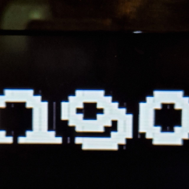
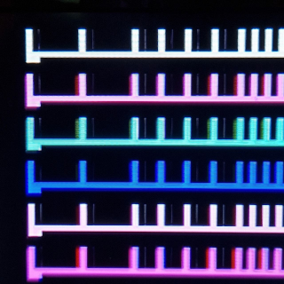
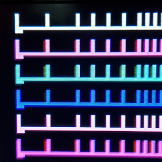
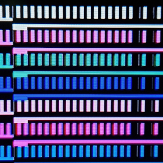
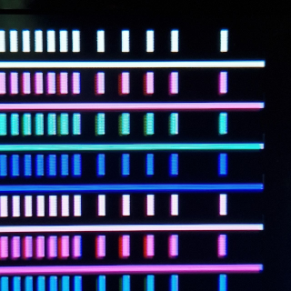
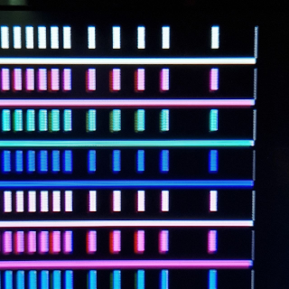
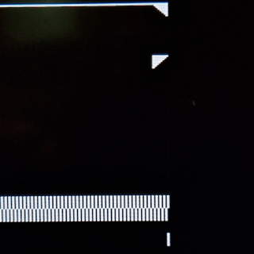
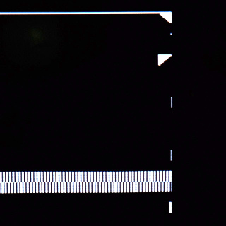
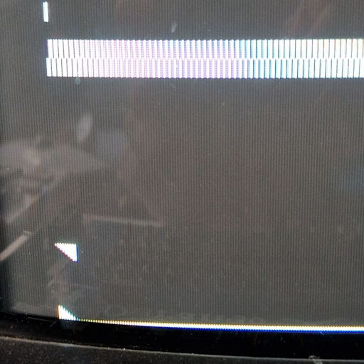

Home > Getting Started > Building
Durango·X > Calibrating
Video Output Calibration
The Video Circuitry of the Durango-X home computer has very tight timing. Thus, some adjustment is needed in order to cope with component tolerances, by means of a few variable resistors which, in turn, generate slight delays for some critical signals, in an attempt to match their timing.
Note
Admittedly, the Durango-X design is far from perfect... adding performance differences according to the source of components, no perfect picture is guaranteed, no matter the adjustment procedure executed. Most of the times you'll be able to reach a reasonable compromise, though.
Tip
A non-metallic screwdriver is recommended for these adjustments, as the proximity of metal might alter the values themselves, thus forging the setting somewhat.
Colour mode
Two adjustable resistors are provided for this video mode: RV127 (PIXEL DELAY)
and RV128 (ENABLE DELAY). These adjustments may interact with each other,
thus make sure to recheck them a few times for the best possible picture quality.
PIXEL DELAY

This is the most important setting with the most noticeable effect in picture quality. Since the multiplexer U125 (74HC157) has slightly shorter propagation delay than the latch U124 (74HC574), a thin ghost image of every even pixel will show up to the right of odd pixels. Thus, a suitable delay between switching their inputs will compensate for this; however, too much of it may lead into uneven pixels.



Note
These are actual photgraphs of an LCD screen (Samsung 26C450), thus some colour artifacts are visible all the time.
ENABLE DELAY
Since the video address counters keep supplying valid addresses all the time,
video output must be disabled after the whole 128px (64 bytes in colour mode)
or 256px (32 bytes in HIRES) have been displayed for every line, in order
not to disturb the sync signal. The same goes true for the vertical blanking interval.
Propagation delays may have the effect of repeating the leftmost pixel
of every raster as a thin ghost line after the rightmost pixel.
This can be mitigated by adding a slight delay to the Display Enable signal;
in case of colour mode, this takes /CDE line from U22 pin 6 (74HC175)
thru a variable resistor RV128 -- this, combined with the U127 pin 19 (74HC245)
input capacitance, creates the needed delay.
However, these timing differences are NOT symmetrical, thus in practice the enable-off as described may need a different setting than the enable-on moment to the left of the picture; the latter one will actually sample the display RAM contents just before the horizontal counter is reset, thus some pixel around the centre of the screen (from the 33rd byte of the previous raster) shows up at the left of the picture. This is usually a more noticeable defect than the previous one, thus if no satisfactory compromise can be set, it's normally best to leave this setting in the low side.


Note
This particular Durango-X unit looks almost OK at an extreme setting, thus no further correction is possible. Check for similar artifacts on the other side of the screen in case the setting is too low. Same in HIRES mode below.
High Resolution mode
HIRES DELAY
This is the only adjustment available in HIRES mode, and it's equivalent to the
aforementioned ENABLE DELAY for colour. The attempt is to minimise stray pixels
to the left and right sides of the picture, although most of the times it must be a
compromise setting.
Technically speaking, this puts some delay on the video stream itself, thus too much of a setting may impair picture sharpness or, most likely, create some glitches.


Monitor settings
Some adjustments can only be done on the monitor itself. Particularly, Durango-X generates 256 raster lines out from CCIR standard absolute maximum of 288 (288p) which some monitors may not display in full; some monitors may need a warm-up time for proper adjustment. Otherwise, look for vertical size/vertical pos./vertical hold settings on your display, while checking that both horizontal lines are visible (from the HIRES test pattern).

Note
The Durango-X screen is almost square (about 6:5 aspect ratio), so there's a lot of margin both sides. By design, the image is slightly off-centre towards the right. v2 issue, however, displays practically square pixels, being a bit better centred.